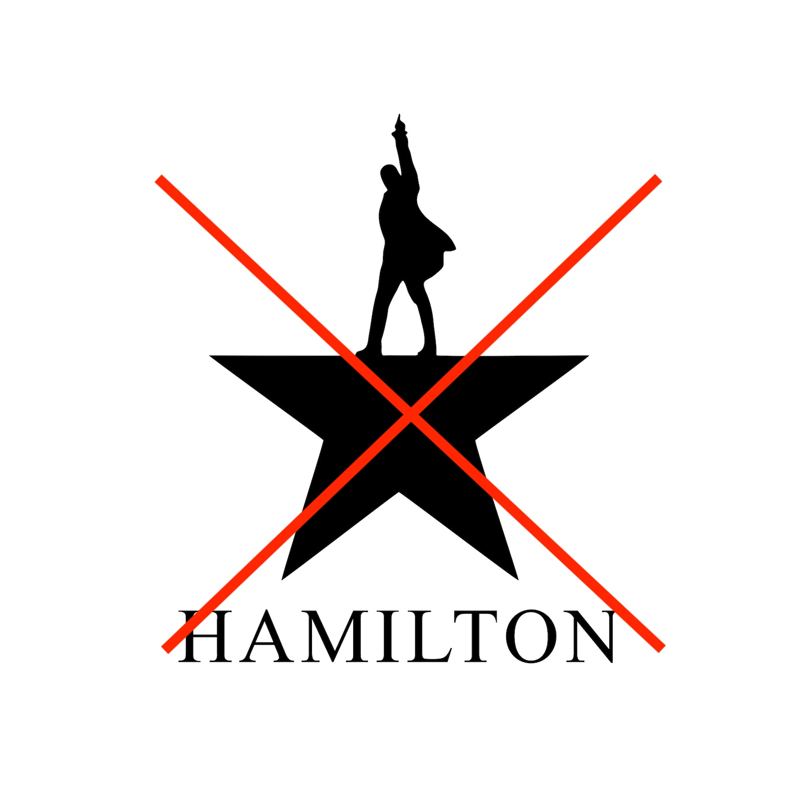

(or “Why Consistency Counts”)
Nobody likes to admit it, but we are all biased.
For example, I hate musicals. So, you COULD say I am extremely biased against them.

With good reason…
But what does that have to do with guessing? Let’s discuss!
What is Bias?
Bias has many meanings. It can mean “a preference”, “an inclination”, or even full-blown prejudice.
For statisticians, however, bias has a very specific (mathematical) meaning.
\(Bias(\hat{Y}) =\)Expected Value - Actual Value
In essence, bias is a long-term tendency to over/under-estimate.
A Biased Picture
The best way to illustrate this concept is with a bullseye:

Imagine an archer fires 10 arrows at this target. A shooter who is biased will consistently err in a given direction:
 Whereas, the shooter who has no bias remains centered on the bullseye:
Whereas, the shooter who has no bias remains centered on the bullseye:
.

This does not mean that the unbiased shooter will hit the bullseye every time (or ever), but on average their shots will center around the bullseye.
The Impact of Bias
A BIASED guess isn’t necesarily a BAD guess
Bias in Daily Life
One practical lesson that you can take away is:
A BIASED guess isn’t necesarily a BAD guess
Based on what you’ve seen so far, it makes sense to think that an unbiased estimate is always going to beat a biased one.
But, as we’ll see, that isn’t necessarily true…
A Statistical Shoot-Off
To illustrate this point, let’s pit 2 archers against one another.
- Archer 1: Unbiased, but inconsistent
- Archer 2: Slightly biased, but VERY consistent
Here, our first contestant is dialed in dead-center for every shot, so we’d expect them to win handily, right?
Let’s see how their scores compare after taking 10 shots:

Comparing their results, it’s clear to see that our biased shooter actually scores much higher.
Note that Archer 2 is noticeably biased off-center, but still manages to win handily because they are so much more consistent.
Summing Up
Most people avoid bias like the plague. That’s understandable - few people want to be seen as unfair!
However, bias is always a tradeoff - if you slightly over/underestimate, but do so in a very precise manner, you may well come out ahead.
Machine learning provides a great example - by using tons of data to find extremely precise yet potentially biased estimates, machine learning models can achieve truly shocking levels of accuracy.
As long as you’re aware of it, bias isn’t always a bad thing.
Up Next: Bad Statistics
Next week, we switch our theme as we explore the Dark Side of statistics: lying.
Learn the sneaky statistical tricks people use to mislead and deceive, and what you can do to fight back.
===========================
R code used to generate plots:
- Target Practice
library(data.table)
library(ggplot2)
library(ggforce)
library(gridExtra)
set.seed(1234567)
circles <- data.table("Y" = 0)
# Plot an archery target
ggplot(circles) +
geom_circle(aes(x0 = 0, y0 = 0, r = 0.4, fill = "black")) +
geom_circle(aes(x0 = 0, y0 = 0, r = 0.3, fill = "blue")) +
geom_circle(aes(x0 = 0, y0 = 0, r = 0.2, fill = "red")) +
geom_circle(aes(x0 = 0, y0 = 0, r = 0.1, fill = "yellow")) +
# Remove background and axis
theme_void() +
theme(aspect.ratio = 1,
legend.position = "none") +
scale_fill_identity() +
coord_cartesian(x=c(-.5,.5),y=c(-.5,.5)) +
annotate("text", x = .37, y = -.4, label = "Summer of Stats", col="grey80", size = 4.5)
### Biased target practice
arrows <- data.table("X"= rnorm(10,.2,.15),
"Y"= rnorm(10,-.05,.15))
# Plot an archery target (muted color scheme)
target <- ggplot(circles) +
geom_circle(aes(x0 = 0, y0 = 0, r = 0.4, fill = "#AAAAAA")) +
#geom_circle(aes(x0 = 0, y0 = 0, r = 0.35)) +
geom_circle(aes(x0 = 0, y0 = 0, r = 0.3, fill = "#9999CC")) +
#geom_circle(aes(x0 = 0, y0 = 0, r = 0.25)) +
geom_circle(aes(x0 = 0, y0 = 0, r = 0.2, fill = "#D64747"), alpha=.4) +
#geom_circle(aes(x0 = 0, y0 = 0, r = 0.15)) +
geom_circle(aes(x0 = 0, y0 = 0, r = 0.1, fill = "#CCCC00")) +
#geom_circle(aes(x0 = 0, y0 = 0, r = 0.05)) +
# Remove background and axis
theme_void() +
theme(aspect.ratio = 1,
legend.position = "none") +
scale_fill_identity() +
coord_cartesian(x=c(-.5,.5),y=c(-.5,.5))
target +
geom_point(data = arrows, aes(x=X, y=Y),shape="x", col="grey90", colour="black", size=16) +
geom_point(data = arrows, aes(x=.2, y=-0.05), shape="+", col="black", size=28) +
annotate("text", x = 0, y = .5, label = "(Biased Right)", col="darkred", size = 10, fontface ="bold.italic") +
annotate("text", x = .37, y = -.4, label = "Summer of Stats", col="grey80", size = 4.5)
### Unbiased
# shoot at random
arrows_1 <- data.table("X"= rnorm(10,0,.1),
"Y"= rnorm(10,0,.15))
random <- target +
geom_point(data = arrows_1, aes(x=X, y=Y),shape="x", col="grey90", size=16) +
geom_point(data = arrows_1, aes(x=0, y=0), shape="+", col="black", size=28) +
annotate("text", x = 0, y = .5, label = "(Unbiased)", col="darkred", size = 10, fontface ="bold.italic")
### Shoot NOT at random, but keep E(X) = 0
arrows_2 <- data.table("X"= c(rep(seq(from=-0.2, to = 0.2, by=.1),9, each = 9)),
"Y"= c(rep(seq(from=-0.2, to = 0.2, by=.1),9)))
arrows_2 <- arrows_2[X==min(X) | X==max(X) | Y==min(Y) | Y==max(Y)]
square <- target +
geom_point(data = arrows_2, aes(x=X, y=Y),shape="x", col="grey90", size=16) +
geom_point(data = arrows_2, aes(x=0, y=0), shape="+", col="black", size=28) +
annotate("text", x = 0, y = .5, label = "(Also Unbiased)", col="darkred", size = 10, fontface ="bold.italic") +
annotate("text", x = .37, y = -.4, label = "Summer of Stats", col="grey80", size = 4.5)
grid.arrange(random, square, ncol=2)
### Archery contest
# Unbiased but inconsistent
arrows_u <- data.table("X"= rnorm(10,0,.15),
"Y"= rnorm(10,0,.3))
archer_1 <- target +
geom_point(data = arrows_u, aes(x=X, y=Y),shape="x", col="grey90", size=16) +
geom_point(data = arrows_u, aes(x=0, y=0), shape="+", col="black", size=28) +
annotate("text", x = 0, y = .5, label = "Archer 1", col="darkred", size = 10, fontface ="bold.italic") +
annotate("text", x = 0, y = -.5, label = "Final Score: 54", col="black", size = 10, fontface ="bold.italic")
# Slight bias but much lower variance
arrows_b <- data.table("X"= rnorm(10,0.1,.05),
"Y"= rnorm(10,0.06,.05))
archer_2 <- target +
geom_point(data = arrows_b, aes(x=X, y=Y),shape="x", col="grey90", size=16) +
geom_point(data = arrows_b, aes(x=0.1, y=0.06), shape="+", col="black", size=28) +
annotate("text", x = 0, y = .5, label = "Archer 2", col="darkred", size = 10, fontface ="bold.italic") +
annotate("text", x = 0, y = -.5, label = "Final Score: 88", col="black", size = 10, fontface ="bold.italic") +
annotate("text", x = .37, y = -.4, label = "Summer of Stats", col="grey80", size = 4.5)
grid.arrange(archer_1, archer_2, ncol=2)